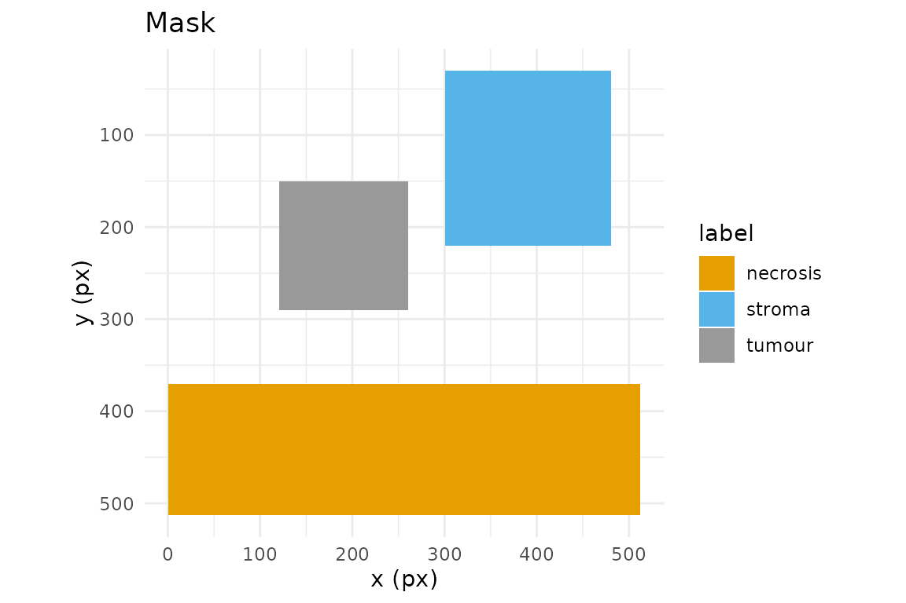

A mask is the artefact that turns hand-drawn regions into
something a segmentation or classification pipeline can consume: an
integer raster on the same pixel grid as the image, where each pixel
carries the identity of the region it belongs to. In annotatR the mask
is the core deliverable, and at_mask() is the function that
produces it from an annot_roi, an annot_layer,
or a whole annot_project.
Three mask types
at_mask() writes one of three rasters, chosen with
type:
-
"binary"— a logical matrix:TRUEwherever any region covers a pixel,FALSEelsewhere. Use it for foreground/background problems (“is this pixel annotated at all?”). -
"labelled"— one distinct positive integer per ROI, assigned in draw order. Use it when individual objects must stay separable, e.g. instance segmentation where two adjacent tumour nests are different things. -
"multiclass"— one integer per label class, so every ROI sharing a label collapses to the same value. Use it for semantic segmentation, where you care about the class (“tumour”, “stroma”) and not the particular ROI.
Every mask is an annot_mask: a matrix with an attached
legend tibble (value, label,
layer, roi_id, n_px,
colour) plus level, dims, and
mask_type attributes. Read the legend back with
at_mask_legend().
The pixel-coverage contract
Rasterisation is only reproducible if the pixel/geometry relationship
is exact, so annotatR pins it down. Pixel (i, j) covers the
half-open square [j-1, j) x [i-1, i), with
(0, 0) at the top-left corner of the top-left pixel; its
centre is therefore (j - 0.5, i - 0.5). With the default
touches = FALSE, a pixel is in the mask when its
centre lies inside the polygon, using a half-open
[lower, upper) tie rule: a centre on the lower edge counts
as inside, one on the upper edge as outside.
The cleanest way to trust this is to compute a small case by eye.
Take a rectangle from (2, 2) to (5, 5) on a
10x10 grid:
r <- at_roi_rect(2, 2, 5, 5, label = "a")
m <- at_mask(r, "binary", dims = c(10, 10))
print(matrix(as.integer(m), 10, 10))
#> [,1] [,2] [,3] [,4] [,5] [,6] [,7] [,8] [,9] [,10]
#> [1,] 0 0 0 0 0 0 0 0 0 0
#> [2,] 0 0 0 0 0 0 0 0 0 0
#> [3,] 0 0 1 1 1 0 0 0 0 0
#> [4,] 0 0 1 1 1 0 0 0 0 0
#> [5,] 0 0 1 1 1 0 0 0 0 0
#> [6,] 0 0 0 0 0 0 0 0 0 0
#> [7,] 0 0 0 0 0 0 0 0 0 0
#> [8,] 0 0 0 0 0 0 0 0 0 0
#> [9,] 0 0 0 0 0 0 0 0 0 0
#> [10,] 0 0 0 0 0 0 0 0 0 0Rows and columns 3, 4 and 5 are set, and nothing else. The rectangle
spans x in [2, 5); the pixel-centre
x-coordinates that fall in that interval are 2.5, 3.5, 4.5,
i.e. columns 3, 4, 5. The centre at x = 5.5 (column 6) is
outside, and the lower edge at x = 2 is inside because
centre 2.5 > 2. The same reasoning on y
gives rows 3:5. A four-pixel-wide rectangle covers exactly nine pixels —
no fencepost surprises.
touches: centres versus contact
touches = TRUE switches to a “does the polygon touch the
pixel at all” rule (GDAL ALL_TOUCHED=TRUE), which grows the
region by the fringe pixels a polygon merely clips. It matters when
edges cut through pixel interiors rather than running along the grid. A
rectangle with fractional bounds shows the contrast:
r2 <- at_roi_rect(2.5, 2.5, 4.5, 4.5, label = "a")
off <- matrix(as.integer(at_mask(r2, "binary", dims = c(8, 8), touches = FALSE)), 8, 8)
on <- matrix(as.integer(at_mask(r2, "binary", dims = c(8, 8), touches = TRUE)), 8, 8)
off
#> [,1] [,2] [,3] [,4] [,5] [,6] [,7] [,8]
#> [1,] 0 0 0 0 0 0 0 0
#> [2,] 0 0 0 0 0 0 0 0
#> [3,] 0 0 1 1 0 0 0 0
#> [4,] 0 0 1 1 0 0 0 0
#> [5,] 0 0 0 0 0 0 0 0
#> [6,] 0 0 0 0 0 0 0 0
#> [7,] 0 0 0 0 0 0 0 0
#> [8,] 0 0 0 0 0 0 0 0
on
#> [,1] [,2] [,3] [,4] [,5] [,6] [,7] [,8]
#> [1,] 0 0 0 0 0 0 0 0
#> [2,] 0 0 0 0 0 0 0 0
#> [3,] 0 0 1 1 1 0 0 0
#> [4,] 0 0 1 1 1 0 0 0
#> [5,] 0 0 1 1 1 0 0 0
#> [6,] 0 0 0 0 0 0 0 0
#> [7,] 0 0 0 0 0 0 0 0
#> [8,] 0 0 0 0 0 0 0 0With touches = FALSE only the pixels whose centres sit
inside the rectangle are kept; with touches = TRUE the
partially clipped border pixels join too. Prefer the default for
area-faithful masks, and touches = TRUE only when you must
not drop thin structures.
Overlap resolution
When two regions cover the same pixel, overlap decides
who wins. The ROIs are rasterised in draw order (ascending
z, then insertion):
lyr <- at_layer("regions")
lyr <- at_layer_add(lyr, at_roi_rect(1, 1, 5, 5, label = "a"))
lyr <- at_layer_add(lyr, at_roi_rect(3, 3, 7, 7, label = "b"))
matrix(as.integer(at_mask(lyr, "labelled", dims = c(8, 8), overlap = "last")), 8, 8)
#> [,1] [,2] [,3] [,4] [,5] [,6] [,7] [,8]
#> [1,] 0 0 0 0 0 0 0 0
#> [2,] 0 1 1 1 1 0 0 0
#> [3,] 0 1 1 1 1 0 0 0
#> [4,] 0 1 1 2 2 2 2 0
#> [5,] 0 1 1 2 2 2 2 0
#> [6,] 0 0 0 2 2 2 2 0
#> [7,] 0 0 0 2 2 2 2 0
#> [8,] 0 0 0 0 0 0 0 0
matrix(as.integer(at_mask(lyr, "labelled", dims = c(8, 8), overlap = "first")), 8, 8)
#> [,1] [,2] [,3] [,4] [,5] [,6] [,7] [,8]
#> [1,] 0 0 0 0 0 0 0 0
#> [2,] 0 1 1 1 1 0 0 0
#> [3,] 0 1 1 1 1 0 0 0
#> [4,] 0 1 1 1 1 2 2 0
#> [5,] 0 1 1 1 1 2 2 0
#> [6,] 0 0 0 2 2 2 2 0
#> [7,] 0 0 0 2 2 2 2 0
#> [8,] 0 0 0 0 0 0 0 0"last" (the default) lets the later-drawn region
overwrite; "first" keeps the earlier one;
"max" and "min" resolve by pixel value; and
"error" aborts the moment any two regions collide, which is
the safest choice when overlaps should never happen.
Masks from a project
On a real project the mask spans the image grid. The bundled example carries one layer of three labelled regions:
proj <- at_example_project()
mc <- at_mask(proj, type = "multiclass")
mc
#> <annot_mask> multiclass | 512 x 512 px | level 0
#> values: 3
#> # A tibble: 3 × 6
#> value label layer roi_id n_px colour
#> <int> <chr> <chr> <chr> <int> <chr>
#> 1 1 tumour regions NA 19600 #999999
#> 2 2 necrosis regions NA 72704 #E69F00
#> 3 3 stroma regions NA 34200 #56B4E9
at_mask_legend(mc)
#> # A tibble: 3 × 6
#> value label layer roi_id n_px colour
#> <int> <chr> <chr> <chr> <int> <chr>
#> 1 1 tumour regions NA 19600 #999999
#> 2 2 necrosis regions NA 72704 #E69F00
#> 3 3 stroma regions NA 34200 #56B4E9
table(as.integer(mc))
#>
#> 0 1 2 3
#> 135640 19600 72704 34200at_mask_stats() summarises each value — pixel counts,
area, fraction of the frame, bounding box and centroid — ready for a
report table:
at_mask_stats(mc)
#> # A tibble: 3 × 12
#> value label n_px area_px area_physical frac_total bbox_xmin bbox_ymin
#> <int> <chr> <int> <dbl> <dbl> <dbl> <dbl> <dbl>
#> 1 1 tumour 19600 19600 NA 0.0748 120 150
#> 2 2 necrosis 72704 72704 NA 0.277 0 370
#> 3 3 stroma 34200 34200 NA 0.130 300 30
#> # ℹ 4 more variables: bbox_xmax <dbl>, bbox_ymax <dbl>, centroid_x <dbl>,
#> # centroid_y <dbl>Writing masks and the legend sidecar
at_write_mask() writes an integer TIFF (16-bit by
default), and — because a bare integer raster is meaningless without a
key — a companion <path>.legend.json describing
it:
dir <- tempfile("masks-"); dir.create(dir)
path <- file.path(dir, "regions.tif")
at_write_mask(mc, path, overwrite = TRUE)
list.files(dir)
#> [1] "regions.tif" "regions.tif.legend.json"
cat(readLines(paste0(path, ".legend.json")), sep = "\n")
#> {
#> "annotatR_version": "0.1.0",
#> "created": "2026-08-11T14:26:05+0000",
#> "mask_type": "multiclass",
#> "level": 0,
#> "dims": [512, 512],
#> "source_project": "example",
#> "legend": [
#> {
#> "value": 1,
#> "label": "tumour",
#> "layer": "regions",
#> "roi_id": null,
#> "n_px": 19600,
#> "colour": "#999999"
#> },
#> {
#> "value": 2,
#> "label": "necrosis",
#> "layer": "regions",
#> "roi_id": null,
#> "n_px": 72704,
#> "colour": "#E69F00"
#> },
#> {
#> "value": 3,
#> "label": "stroma",
#> "layer": "regions",
#> "roi_id": null,
#> "n_px": 34200,
#> "colour": "#56B4E9"
#> }
#> ]
#> }The schema is self-describing: annotatR_version, the
created timestamp, the mask_type, the pyramid
level, the raster dims, the
source_project, and the full legend array (one
object per value, mirroring the legend tibble). Any consumer can map
pixel values back to labels without touching R.
Downstream consumption
A Python pipeline reads the TIFF and its legend directly — no R runtime, no bespoke format:
import json
import tifffile
mask = tifffile.imread("regions.tif") # integer array, image grid
with open("regions.tif.legend.json") as f:
legend = json.load(f)
value_to_label = {row["value"]: row["label"] for row in legend["legend"]}
tumour = mask == next(v for v, l in value_to_label.items() if l == "tumour")Reading masks back
Masks are not a dead end. at_read_mask() polygonises an
existing mask — annotatR’s own output, or a Cellpose/StarDist/QuPath
raster — back into an editable annot_layer, recovering
labels from the sidecar when it is present:
back <- at_read_mask(path)
vapply(back$rois, function(r) r$label, character(1))
#> [1] "necrosis" "tumour" "stroma"Finally, at_plot_mask() renders a mask with its legend
for a quick visual check:
at_plot_mask(mc)
Next, see the Interoperability vignette for GeoJSON, QuPath, and CSV exchange with other tools.
Use of LLM tools
Portions of this package were prepared with assistance from large language model tooling for narrowly defined, non-authorial tasks: copyediting, prose smoothing, Markdown/LaTeX formatting, scaffolding of boilerplate files (CI configs, build scripts), code refactoring. The tools used were Chat AI, the LLM service of KISSKI (GWDG), and a self-hosted Mistral Small (24B, Apache-2.0) run locally via Ollama and the ollamar R package — local inference only, with no data sent to third parties for the self-hosted model.